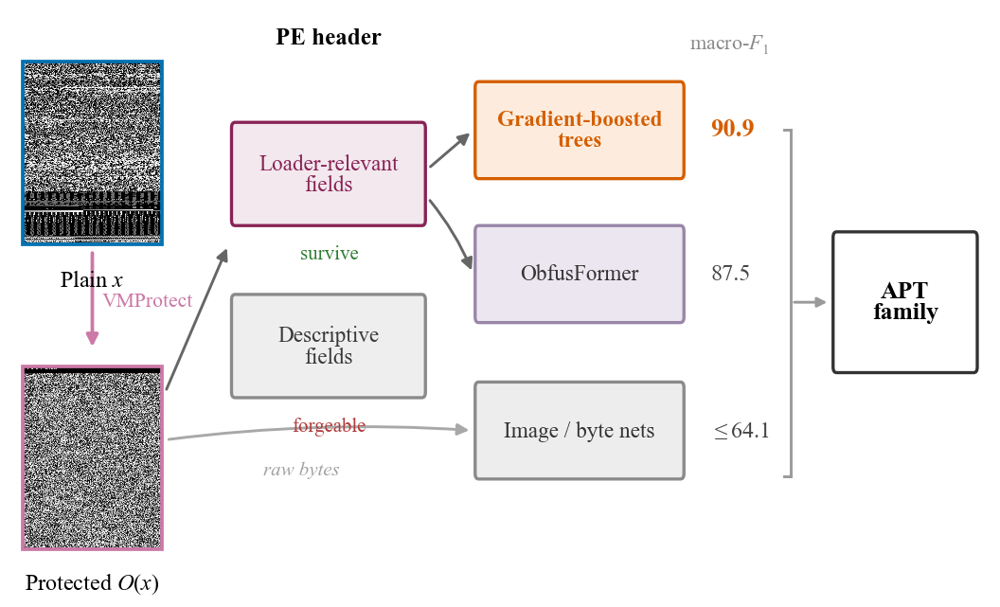
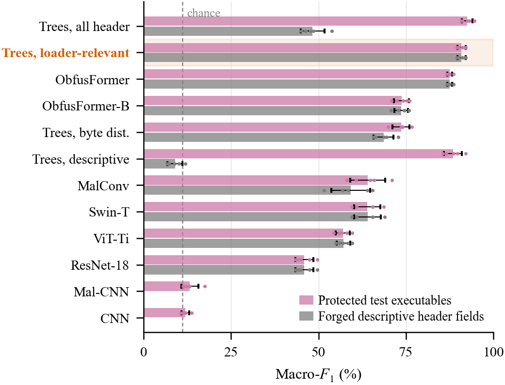

Abstract
Static classifiers must attribute malware to threat groups even after obfuscation has rewritten its code. However, classifiers of protected malware were evaluated with splits that leak executables or builds between training and testing, and it is unknown which parts of a protected file identify its family or whether an adversary can rewrite them. Therefore, we propose a build-grouped, forgery-aware evaluation of static attribution that tests classifiers on unseen and later builds and on forged, edited, or copied headers. We compared gradient-boosted trees, eight image and byte networks, and a multi-view Transformer we developed on executables of nine advanced persistent threat groups. On unseen builds, gradient-boosted trees on the loader-relevant header fields, which VMProtect keeps, attributed protected executables most accurately, with a macro-F1 of 90.9%, against 87.5% for the Transformer and at most 64.1% for the networks. The trees trained in seconds and were unaffected by forging the descriptive fields; copying another group's descriptive fields, however, lowered the macro-F1 of trees on all header fields from 92.5% to 50.1%. These results show that simple gradient-boosted trees attribute VMProtect-protected malware from its loader-relevant header structure when related builds occur in training, whereas descriptive fields can be forged.
Overview

Key results
Attribution of VMProtect-protected executables to their APT family, protected-test macro-F1 on folds grouped by build (nine groups, Joint protocol).
| Attributor | Reads | Protected macro-F1 |
|---|---|---|
| Gradient-boosted trees | loader-relevant header fields | 90.9% |
| ObfusFormer (ours) | same fields, multi-view Transformer | 87.5% |
| Image & byte networks | raw / scrambled bytes | ≤ 64.1% |

Findings
- Simple trees win, cheaply. Gradient-boosted trees on the loader-relevant header fields are the most accurate attributor and train in seconds on a CPU, versus minutes on a GPU for the deep networks.
- What survives is what matters. VMProtect keeps the loader-relevant header structure; the family signal lives mainly in the section table and data directories, a size fingerprint of related builds.
- Forgery-aware. Trees on the loader-relevant fields are unaffected by forging the descriptive fields, whereas classifiers that read the descriptive fields can be redirected by copying another group's fields (92.5% → 50.1%). Detection reaches 94.7% accuracy; attribution of later builds stays ahead at 61.0%.
- Leakage-free protocol. Folds grouped by build and a split by time remove the executable- and build-level leakage of prior released image splits.
BibTeX
@article{fang2026simpletrees,
title = {Simple Trees Beat Deep Networks at Attributing VMProtect-Protected
Malware: A Leakage-Free, Forgery-Aware Evaluation},
author = {Fang, Xubo and Dong, Haochen and Wang, Jiaqing and Han, Sicheng},
journal = {IEEE Transactions on Dependable and Secure Computing},
note = {Under review},
year = {2026}
}Code and derived data will be released at this repository upon publication.